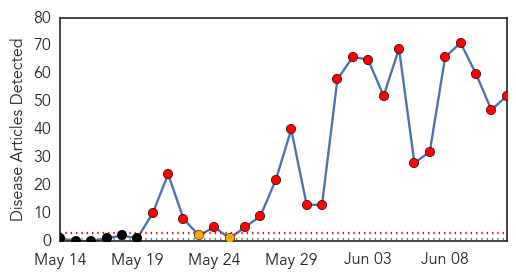
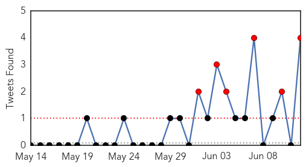
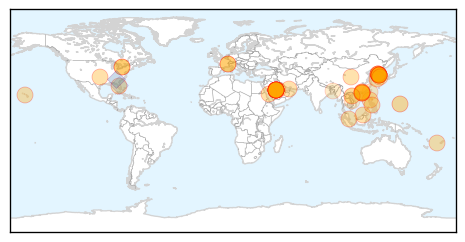
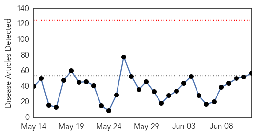
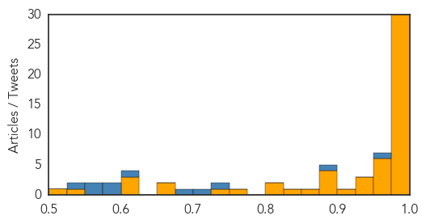

MERS
30-Day Web Trend
22 alerts, 2 warnings

30-Day Twitter Trend
6 alerts, 0 warnings

Article Locations
Article Confidences

Top Articles:
- 1.000
- What you should know about MERS, the mystery disease that has South Korea on edge
- 1.000
- South Korea Reports 11th Death from MERS
- 1.000
- What You Need to Know About Middle East Respiratory Syndrome
- 1.000
- CDC warns doctors to screen patients for MERS virus
- 1.000
- 10 Essential Facts About MERS
- 1.000
- MERS outbreak in South Korea can probably be beat: WHO
- 1.000
- MERS closes 2 hospitals
- 0.999
- South Korea reports 14 new MERS cases, taking total to 122
- 0.999
- South Korea seals two Mers hospitals as officials say worst may be over, East Asia News & Top Stories
- 0.999
- CDC Issues Advisory to US Hospitals over South Korea MERS Outbreak
- 0.999
- Breathe Easy: Sultanate is MERS-Free
- 0.998
- S Korea MERS epidemic: worst may be over
- 0.998
- South Korea says 11th patient has died of Mers infection as two hospitals sealed off
- 0.998
- S. Korea, WHO experts downplay pandemic potential of MERS
- 0.998
- Fiji Times Online
- 0.998
- South Korea MERS outbreak shows signs of slowing
- 0.998
- Kingdom, South Korea see no MERS letup
- 0.998
- S. Korea, WHO experts downplay pandemic potential of MERS
- 0.998
- Northern Voices Online USA MERS outbreak threat
- 0.997
- MERS—the latest threat to global health security
- 0.997
- Korea's MERS outbreak a wake-up call: WHO
- 0.997
- South Korea's MERS outbreak should be a wake-up call for the world: WHO expert
- 0.997
- South Korea's MERS outbreak should be wake-up call, WHO expert says
- 0.997
- South Korea's MERS outbreak yet another wake-up call: WHO
- 0.997
- U.S. hospitals warned to be on lookout for MERS cases
- 0.997
- South Korea’s MERS outbreak should be a wake-up call for the world: WHO expert
- 0.995
- U.S. hospitals warned to be on lookout for MERS cases
- 0.994
- No MERS cases known in Brunei, news, Health News, AsiaOne YourHealth
- 0.994
- CDC warns about South Korean MERS outbreak
- 0.994
- MERS infections abate in S.Korea with 4 more cases - Xinhua
- 0.991
- Expert answers questions about MERS
- 0.988
- Korean Airlines and Asiana flights should be sterilized
- 0.985
- China orders airlines to sterilize planes flying from S. Korea
- 0.984
- No MERS cases known in Brunei
- 0.981
- China's aviation regulator orders enhanced MERS control
- 0.980
- China orders airlines to sterilize planes flying from S. Korea
- 0.978
- Juvenile camels 'key source' of Mers
- 0.976
- Juvenile camels key source of Mers - Click Ittefaq
- 0.972
- MERS could dent travel to Korea
- 0.967
- SKorean MERS deaths rise amid signs of outbreak easing
- 0.967
- ‘Doctor Shopping’ Helped Spread Deadly MERS Virus
- 0.964
- Travelers avoid South Korea amid MERS scare, but will it last?
- 0.949
- PH postpones Independence Day celebration in South Korea
- 0.885
- Riyadh, Seoul to cooperate on fighting MERS virus
- 0.869
- KUNA : Japan sends expert to MERS-hit S. Korea
- 0.741
- The MERS Scare: an On-the-Ground Report From Korea
- 0.682
- Sample Test of S. Korean death in Vietnam shows negative to MERS - Xinhua
- 0.677
- Sample Test of S. Korean death in Vietnam shows negative to MERS
- 0.661
- Korean cosmetics lose US$5.4B due to MERS
- 0.619
- June 11 Asia-Pacific news summary at 1000 GMT -
Showing top 50 articles...
Top Tweets:
- 0.845
- RT: Updated info guidelines for eval of patients for Middle East Respiratory Syndrome Coronavirus (MERS-CoV) infection: http…
- 0.845
- RT: Updated info guidelines for eval of patients for Middle East Respiratory Syndrome Coronavirus (MERS-CoV) infection: http…
- 0.658
- Updated info guidelines for eval of patients for Middle East Respiratory Syndrome Coronavirus (MERS-CoV) infection: http://t.co/IZv6kwUv15
- 0.533
- RT: S. Korea-Gov announces 12 new coronavirus MERS cases & 4th death today-total cases=138total deaths=14 -June 12 https:/…
Ebola
30-Day Web Trend
0 alerts, 0 warnings

30-Day Twitter Trend
0 alerts, 0 warnings

Article Locations

Article Confidences
Top Articles:
- 1.000
- Rise in new cases shows Ebola has not released its deadly grip
- 1.000
- Ebola outbreak: Timeline of outbreak in West Africa
- 1.000
- Ebola Resurgent: African States Report Alarming Rise in Cases
- 1.000
- Dozens of new Ebola cases reported in Sierra Leone and Guinea
- 0.999
- donga.com[English donga]
- 0.998
- Sierra Leone leader imposes curfew in bid to halt Ebola
- 0.997
- OraSure Technologies : rapid Ebola test in line for up to $10.4 million in federal funding
- 0.997
- Sierra Leone announces new measures to halt Ebola
- 0.997
- National Geographic Magazine
- 0.996
- Liberia still cautious after Ebola-free declaration
- 0.996
- Sierra Leone announces new curfew to halt Ebola
- 0.996
- 5 things to know for your New Day -- Friday, June 12
- 0.995
- Awards for 'exceptional' Ebola work
- 0.995
- CDC warns U.S. doctors: Be on the lookout for MERS
- 0.994
- New Entry Screening and Monitoring Guidelines for Travelers Entering the United States from Liberia
- 0.993
- Ebola instant test: HHS signs $1.8M contract with Pennsylvania company
- 0.993
- Africa – what’s the score?
- 0.993
- Politico SL News SMART wins international award
- 0.990
- Quick, cheap, easy help in stopping disease
- 0.990
- Ebola nurse Will Pooley gets MBE honour
- 0.989
- A Chinese Ebola Drug Raises Hopes, and Rancor
- 0.988
- Phase 3 Ebola Vaccines Clinical Study Conference Opens in Conakry
- 0.985
- Virginia Hospital Center's Ebola Relief container arrives in (...)
- 0.985
- Ebola Scan for Jun 12, 2015
- 0.984
- MERS quarantine ends for 75 under observation
- 0.983
- Silicon Valley firm warns against travel to S. Korea
- 0.980
- Ebola drug made in China fuels hope — and controversy
- 0.980
- The most from the coast
- 0.979
- Sierra Leonean and Guinean leaders visit border to reinvigorate Ebola response
- 0.975
- Stigmatised: The Ebola heroes no one will hire
- 0.974
- Helen Shirley-Quirk named in Queen's Birthday Honours for battle against epidemics
- 0.969
- ACT Alliance Appeal: Post-Ebola Recovery Program in Liberia – LBR151 - Liberia
- 0.967
- Ghana suspends Ebola vaccine trial, claims citizens used as guinea pig
- 0.966
- Los Angeles Prepares for MERS With a Laid-Back Stance
- 0.951
- Doctor who fought Ebola inspires Academy of Notre Dame grads
- 0.951
- Seoul a ghost town as South Korea grapples with Mers fear
- 0.950
- Tour Operators Seeing Few MERS-Related Cancellations
- 0.944
- Suffolk Ebola survivor Will Pooley awarded an MBE
- 0.926
- Santa Fe company part of push for Ebola vaccine
- 0.902
- British people involved in fight against Ebola in Africa to get medal
- 0.898
- Ellen applauds G7 Summit’s success
- 0.898
- Gov't was warned against Ebola vaccine trial
- 0.892
- Ebola Trial Not A Referendum
- 0.886
- Politico SL News Interview: Ending Ebola will be painful – MSF
- 0.859
- SABIN briefs Parliament on Immunization Financing « Awoko Newspaper
- 0.842
- WHO Resident Representative in Sierra Leone Visits the China-aided Fixed Bio-Safety Laboratory and Ebola Holding and Treatment Center
- 0.819
- Unification minister to visit inter-Korean border checkpoint on MERS woes
- 0.819
- Unification minister to visit inter-Korean border checkpoint on MERS woes
- 0.759
- Scientifically, Ebola Clinical Trial Is Not Wrong, But... - Fmr FDA Boss
- 0.743
- Brigade completes Ebola mission in Liberia
Showing top 50 articles...
Top Tweets:
- 0.955
- Ebola Update: 27251 confirmed probable & suspected cases reported in 3 most affected countries with 11163 deaths. EbolaResponse
- 0.877
- RT: New: The Case for Improved Diagnostic Tools to Control Ebola Virus Disease in West Africa and How to Ge ... http:…
- 0.739
- RT: Test your EBOLA KNOWLEDGE with All Against Ebola Game! Your opinion is very important! AllAgainstEbola ht…
- 0.711
- The Case for Improved Diagnosti Tools to Control Ebola Virus Disease in West Africa and How to Get There http://t.co/em2EHNxpBj
- 0.688
- The real killer in the Ebola epidemic - PBS NewsHour (blog) http://t.co/ySwgbKWEcA ebola EVD
- 0.613
- RT: good news for guineabissau: source says number of ebola contacts in the guinea border area has halved to 119 from a wee…
- 0.594
- Ebola: WHO Reports Spike in Cases in Guinea and Sierra Leone http://t.co/VUnLVCZOY8
- 0.591
- Quick cheap way to help stop deadly Ebola - CNBC http://t.co/Z0RvzTwBBG ebola EVD
- 0.573
- Ebola instant test: HHS signs $1.8M contract with Pennsylvania company - Washington Times http://t.co/RbLaclIuHC ebola EVD
- 0.555
- BREAKING: Sierra Leone imposes curfew after a new spike Ebola cases. The outbreak isn't over need is great to end it http://t.co/l8B6ALNeA9
- 0.536
- Using SMS data to monitor exposure to Ebola outbreak & estimate its impact on health behaviour in Liberia http://t.co/GwdhRbnZXu